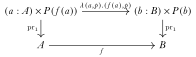
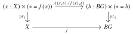
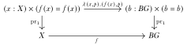

We will show how to formalize parts of differential geometry, gauge theory, and Chern-Weil theory in homotopy type theory.
The background on group extensions are 1, 2, 3.
One way of thinking about bringing smooth manifolds into this group theoretic picture is in a post by Schreiber 4
Differential geometry (Kobayashi and Nomizu 1963) (Baez and Muniain 1994), gauge theory (Hamilton 2017) (Atiyah and Bott 1983), and Chern-Weil theory(Freed and Hopkins 2013) lie at the intersection of mathematics and physics. The theory of general relativity is expressed as formulas relating the curvature of spacetime to the distribution of energy and matter. The standard model of particle physics is expressed as a collection of principal bundles and associated vector bundles, sections of which represent the fields of matter and forces. And in the latter decades of the 20th century the tools of the standard model were applied back into mathematics to make discoveries about the geometry of 3- and 4-dimensional manifolds(Scorpan 2005).
Homotopy type theory(Univalent Foundations Program 2013) seems at first like it’s from a different universe entirely. It grew out of questions of a foundational nature inside mathematics and computer science. It brings a synthetic stance, where we are invited to stop thinking of mathematical objects as sets with structure, and instead to assemble the objects into higher categories with collective properties like being locally cartesian closed, or having homotopical model structures. Such categories have internal languages, which are syntactic structures much like programming languages, which allow us to reason about the objects in a generic way.
Group theory including the theory of higher groups is built directly into HoTT, via the identity types. A thorough introductory treatment of group theory that adopts this philosophy can be found in the book Symmetry (Bezem et al. 2023). We will build on this synthetic framework to explore gauge theory. But it’s important to be clear that this is a choice, and there is an alternate approach. Namely we could define a group to be a type together with some extra structure: an identity, a multiplication operation, and an inverse operation, satisfying some properties. We would do the same for higher groups, and we’d prove an equivalence between the type of higher groups and the type of pointed, connected types. Such a project has been undertaken in the context of higher topos theory, but at the time of this writing it hasn’t been done inside HoTT. We certainly can define the type of groups which are sets, and prove that this type of 0-groups is equivalent to connected 1-types, and this is done in Symmetry. But in the case of higher groups we only have one definition: pointed connected types. This happens to be a lovely theory, and so we’ll be glad to run with that.
Definition. A (higher) group is a pointed 1-type \(BG\) with basepoint \(*\), which is connected, i.e. that we have a term of the type \((a:BG)\to||*=a||_{-1}\). We denote the type \(*=*\) by \(G\), and so if we have a particular group in mind then we think of that group as being installed as the identity type of the basepoint in a type we call \(BG\).
This notation is fairly confusing, since we have stated that \(BG\) is a group, but that \(G\) is the group we really mean. Let’s see how much trouble it ends up causing.
Lemma If \(X\) is a pointed, connected 1-type with basepoint \(*\),\(x:X\) is any term, and \(p:*=x\) any term, then the sets \(*=*\) and \(*=x\) are isomorphic. Furthermore, \(*=*\) acts on \(*=x\) freely and transitively, by concatenation.
Proof For the first statement, define \(-\cdot p:*=*\to *=x\), by concatenating with \(p\). Then \(-\cdot p^{-1}:*=x\to *=*\) is a two-sided inverse. For the second statement, if \(g:*=*\) then \(g\cdot p:*=x\), giving an action. Transitivity can be seen by solving the equation \(q = g\cdot p\) for \(g\) by concatenating both sides by \(p^{-1}\) on the right. Freeness can be seen by observing that \(g\cdot p = h\cdot p\) implies that \(g=h\).
So identity types with unequal endpoints like \(*=x\) are torsors, and it’s noteworthy to find torsors appearing to close to the foundations of HoTT.
Given any pointed type \(X\) with basepoint \(x\) we can form the type \(\mathsf{BAut}_x(X)\) by taking the connected component of \(x\). If we consider the terms of \(X\) to be at type-theoretic level 0, then \(\mathsf{Aut}_x\) brings one of the identity types from level 1 down to level 0 to look at it on its own. Then the B can be thought of as reinstalling the identity type at level 1 of the new type, which contains only the connected component of \(x\). When we do this, though, we don’t forget the identity types of all the other terms in the connected component. That’s why there really isn’t a true B operator, just a notation that is meant to evoke the classical idea of a classifying space, since as we’ll see we really have captured that idea.
A homomorphism of groups is a pointed map \(f:BG\to X\). The rules of type theory will ensure that this map contains a map between the identity types inside the types, forming a group homomorphism in the usual sense. We can think of \(G\) acting on \(x\) since the homomorphism is \(*=*\to x=x\). If we take \(X=\mathcal{U}\) to be the universe, and if \(f(*)=H\), then we can think of \(G\) acting on the type \(H\).
If \(BG\xrightarrow[]{r_X} \mathsf{BAut}_x X\) and \(BG\xrightarrow[]{r_Y} \mathsf{BAut}_y Y\) are two group actions
Pointed connected types \(BG\) come with three built-in type families by choosing identity types with different endpoints. There’s \(LG:=(a:BG)\times a=a\) which is at each point the group of self-identifications of that point. There’s \(EG:=(a:BG)\times *=a\) which aren’t groups, but which are similar to the self-identifications, and in fact are torsors over \(G\)! At each point \(a:BG\) we can concatenate a term of \(EG(a)\) with a term of \(LG(a)\) by concatenating the latter to the \(a\) endpoint of \(EG(a)\). And lastly there’s the non-dependent type \(BG\times G\) which I’m mentioning because we can also concatenate a term of \(EG(a)\) with a term of \(G\), by attaching it to the \(*\) endpoint.
\(EG\) is contractible (Lemma 3.11.8 of The HoTT Book). It’s worth reflecting for a moment on the fact that \(EG\) is contractible but \(BG\) is not. After all, \(BG\) is connected and so all its terms are equal to the base point via some path. But we don’t select any specific paths as part of the data. Forming \(EG\) is simply to install all the solutions to this missing data as the fibers of a bundle over \(BG\).
Example: for \(G=\mathbb{Z}, \mathbb{Z}^n, \mathbb{Z}_2\) provide \(BG\), \(EG\), and \(LG\).
Pulling back \(EG\) via a map \(X\to BG\) deserves to be called a principal \(G\)-bundle over \(X\), and pulling back \(LG\) via the same map deserves to be called a gauge transformation.
In HoTT given a map \(f:A\to B\) and a type family \(P:B\to \mathcal{U}\) we can form the following square and it will commute and be a pullback:

If we have an arbitrary type \(X\) and \(f:X\to BG\) then we can pull back \(EG\) this way:

or we can pull back \(LG\):

Let’s name these pullbacks \(E_fX\) and \(L_fX\) respectively. We include the classifying map \(f\) in the notation but maybe we’ll leave it out sometimes. Terms of \(E_fX\) are a pair \((x, p)\): a term of \(X\) and a term of the torsor \(*=f(x)\). Terms of \(L_fX\) are also a pair \((x, l)\): a term of \(X\) and a term of the loop space \(f(x)=f(x)\). We can form \((x, p\cdot l)\) and in fact we can act on all of \(E_fX\) with a section of \(L_fX\): \[\mathcal{G}X:=((x,l):L_fX)\to E_fX\to E_fX\] which acts fiberwise by concatenating \(l\) to any torsor.
The bundle \(E_fX\) would classically be called something like \(P\), a principal bundle with gauge group \(G\) over \(X\). The bundle \(L_fX\) would then be referred to as \(\mathrm{Ad}P\). Why is that?
The classical theorems take the form: taking the pullback of \(EG\to BG\) forms a bijection between homotopy classes of maps \(f:X\to BG\) and equivalence classes of principal \(G\)-bundles over \(X\).
Inductive types are collections of data and rules for mapping out of instances of the collection. For example here is an inductive type defining the natural numbers in Agda:
This theory can be extended to support data having values in the identity types of data that was specified earlier in the definition. Here is the circle defined as a HIT in Cubical Agda:
Given a group \(G\) (meaning, a 0-type) with identity \(G.1g\) and multiplication \(G.mul\), we can form the Eilenberg-Mac Lane type \(K(G, 1)\) as the following HIT:
{-# OPTIONS --without-K --exact-split #-}
module group_extensions where
open import foundation.universe-levels
open import foundation.function-types
open import foundation.identity-types
-- What is the analogue in HoTT of the fact from group extensions that we classify an extension by
-- taking a set-based section of the splitting, seeing that those elements act on the left hand group,
-- noting that this map into Aut G is not a homomorphism. There is a 2-cell that we can conjugate with that makes
-- it a homomorphism. So together, the extension (plus the arbitrary choice of splitting) yeilds a 2-map to the 2-group
-- AUT(G).
-- For us, a splitting will be a section of a type family. This acts on loops with apd.
-- So we want to prove some facts about apd and to what extent it's a homomorphism of loops.
-- It doesn't send loops to loops, because it sends the loop p to a loop from fx to ap p fx.
-- apd-hom :
-- {l1 l2 : Level} {A : UU l1} {B : A → UU l2} (f : (a : A) → B a) {x : A}
-- (p q : x ＝ x) → (apd f (p ∙ q)) ＝ ((apd ((tr B p) ∘ f) q) ∙ (apd (f) p))
-- apd-hom f refl q = ?
Extensions of \(X\) by \(BG\) are equivalent to maps \(\mathscr{C}:X\to \mathsf{BAut}BG\).
Let’s look in detail at \(\mathsf{BAut}BG\). First of all it’s a 2-type. Its terms are “\(BG\) clones”. The identity types are equivalences between \(BG\) clones. Those equivalences have identity types as well, which are homotopies between equivalences between \(BG\) clones.
Meanwhile each of the fibers \(\mathscr{C}(x)\) is a \(BG\)-clone. The union of all of these is the sigma-type \((x:X)\times \mathscr{C}(x)\). But the 2-type structure of \(\mathsf{BAut}BG\) doesn’t apply inside a term of a \(BG\)-clone, they are identity types between types, whereas inside \(BG\) and its clones, we have terms, which are something like individual \(G\)-torsors.
Maybe we should look to the pi-type \((x:X)\to \mathscr{C}(x)\). This should be something like a principal bundle, sinc this type is a generalization of the type \(X\to BG\), which as we know is supposed to classify principal bundles. In the special case where \(\mathscr{C}\) is the constant map to \(BG\), we indeed would have to consider the pi-type to have a type of principal bundles.
In the literature on Schreier theory, we can look for clues about how to proceed. Let’s move away from HoTT for a moment and look at group extensions from the point of view of groupoids and 2-groupoids, in classical category theory.
See Blanco.
The study of group extensions is about constructing an equivalence between extensions of a group \(X\) by \(G\), which is a surjection from the extension \(E\) to \(X\), and a classifying map out of \(X\). Given the extension, which takes the form of an exact sequence \[1\to G\xrightarrow[]{i} E\xrightarrow[]{p}X\to 1\] how do we construct a classifying map out of \(X\).
Baez sketch from 5: since \(p\) is a surjection, start by choosing a set function \(s:X\to E\) that is a section of \(p\). This induces a function \(\alpha:X\to \mathsf{Aut}G\) by taking \(\alpha(x)(g)=s(x)g s(x)^{-1}\). In general \(\alpha\) is not a homomorphism, but it is up to a conjugation. If we view groups as 1-element categories and homomorphisms as functors, then \(\alpha\) is a weak functor.
Let’s compare \(\alpha(xy)\) to \(\alpha(x)\alpha(y)\). \[\alpha(xy)(g) = s(xy)gs(xy)^{-1}\] whereas \[\alpha(x)(\alpha(y)(g)) = s(x)[s(y)gs(y)^{-1}]s(x)^{-1}\] which are equal if \(s\) is a homomorphism. But if \(s\) is not, we need a “homomorphinator” to relate these two formulas. The obvious thing to do is to form \(h(x, y) = s(xy)s(x)^{-1}s(y)^{-1}\). Conjugating by \(h(x,y)\) cancels the \(s(x)s(y)\) factors and replaces them with \(s(xy)\). So a map that isn’t a homomorphism can nonetheless behave like one if we have the freedom to introduce a homomorphinator.
What is weakness when we look at things in HoTT? (My current candidate: an unpointed map. The homomorphinator would then be a choice of path that restores pointedness.)
What are conjugations? (My current candidate: changes of basepoint.)
What is a map that isn’t a homorphism in HoTT but is a homomorphism up to a 2-morphism? Does this imply that \(E\) ends up having a natural 2-type structure? It’s a union of \(BG\) clones over the base \(X\) and so by the usual calculations it is only a 1-type.
Can we bring some of the 2-type structure from \(\mathsf{BAut}BG\) into \(BG\) itself? Some ideas:
Tying this together might be the intuition that higher paths are more and more microscopic structure inside \(BG\), whereas the types \(BG=_{\mathsf{BAut}BG}BG\) and then \(\mathrm{id}=_{BG=BG}\mathrm{id}\) seem to go outward, or maybe more fruitfully, they go inward but inside \(\mathsf{BAut}BG\). I seem to want to relate these in a way I haven’t seen, where we can bring more structure inside \(BG\) by looking in \(\mathsf{BAut}BG\).
I believe I can define maps \(BG\to BG=BG\) and from \(*=_{BG}a\to BG=BG\) which utilize the homogeneity of \(BG\). Can this be clarified enough to see how we might introduce 2-paths in \(BG\) which let us translate the Schreier story from 2-groups to 2-types?
John Baez, “Week 223”: https://math.ucr.edu/home/baez/week223.html↩︎
David Jaz Myers, Dissertation: https://jscholarship.library.jhu.edu/handle/1774.2/67618↩︎
https://ncatlab.org/nlab/show/group+extension↩︎
Urs Schreiber, “n-Transport and Higher Schreier Theory”: https://golem.ph.utexas.edu/category/2006/09/nconnections_and_higher_schrei.html↩︎
John Baez, “Week 223”: https://math.ucr.edu/home/baez/week223.html↩︎